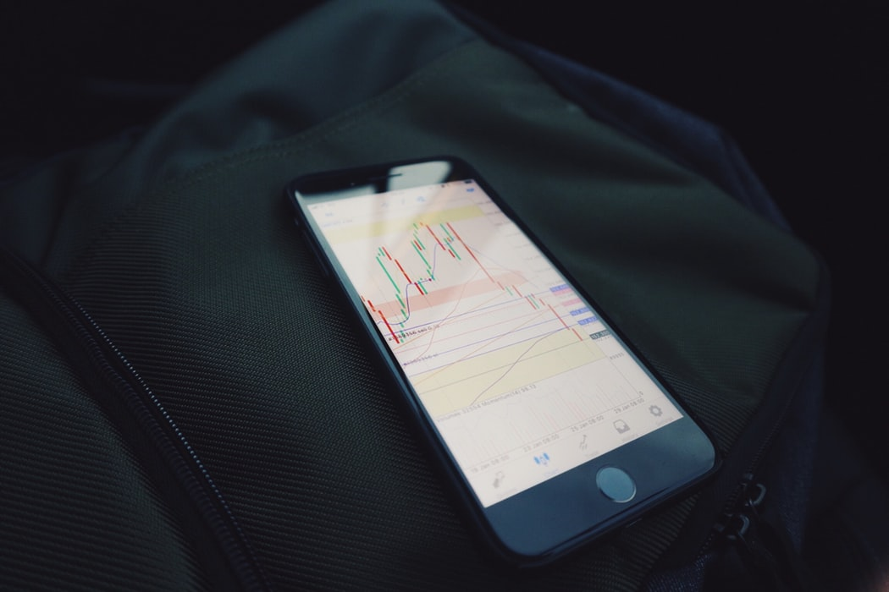

- 매매횟수를 줄여라.
좋은기회는 자주 오지않는다 좋은기회가 올때까지 가만히있는게 나은경우가 많다
시장의 작은변동에 휩쓸려 살아남지 못한다면 기회도 잡을수없다
- 역추세매매는 절대 하지말라.
원칙 1번에서 연장되는 말이다.
- 손절은 짧게, 이익을 길게 가져가라.
손절은 지난 매매나 본절과는 무관하게 생각해야한다.
오로지 앞으로 오를지 내릴지만 판단한후 손절을 해야한다.
아무리 확실한 자리여도 틀릴 확률이 있고
손절을 하지 못한다면 모든걸 잃을수있다.
설령 휩쏘에 의한 손절이라 할지라도 필수로 해야한다.

BITMEX에서 거래하기전 위의 사항을 반드시 숙지한다.